Git Lesson 3 – Working with remotes
为了能在任意 Git 项目上协作，你需要知道如何管理自己的远程仓库。 远程仓库是指托管在因特网或其他网络中的你的项目的版本库。
Working with remotes
Showing your remotes
如果想查看你已经配置的远程仓库服务器，可以运行 git remote 命令。 它会列出你指定的每一个远程服务器的简写。 如果你已经克隆了自己的仓库，那么至少应该能看到 origin ——这是 Git 给你克隆的仓库服务器的默认名字：
你也可以指定选项 -v，会显示需要读写远程仓库使用的 Git 保存的简写与其对应的 URL。如果你的远程仓库不止一个，该命令会将它们全部列出。
Adding Remote Repositories
我们在之前的章节中已经提到并展示了 git clone 命令是如何自行添加远程仓库的， 不过这里将告诉你如何自己来添加它。 运行 git remote add <shortname> <url> 添加一个新的远程 Git 仓库，同时指定一个方便使用的简写：
现在你可以在命令行中使用字符串 e 来代替整个 URL。比如在下面的抓取和拉取操作中。
Fetching and Pulling from Your Remotes
从远程仓库中获得数据，可以执行：
|
|
这个命令会访问远程仓库，从中拉取所有你还没有的数据。 执行完成后，你将会拥有那个远程仓库中所有分支的引用，可以随时合并或查看。但是它只会将数据下载到你的本地仓库——它并不会自动合并或修改你当前的工作。 当准备好时你必须手动将其合并入你的工作。
如果你的当前分支设置了跟踪远程分支， 那么可以用 git pull 命令来自动抓取后合并该远程分支到当前分支。 这是个更加简单舒服的工作流程。默认情况下，git clone 命令会自动设置本地 master 分支跟踪克隆的远程仓库的 master 分支（或其它名字的默认分支）。 运行 git pull 通常会从最初克隆的服务器上抓取数据并自动尝试合并到当前所在的分支，而不是只下载数据。
Pushing to Your Remotes
当你想分享你的项目时，必须将其推送到上游。 这个命令很简单：git push <remote> <branch>。 当你想要将 master 分支推送到 origin 服务器时（再次说明，克隆时通常会自动帮你设置好那两个名字）， 那么运行这个命令就可以将你所做的备份到服务器：
|
|
只有当你有所克隆服务器的写入权限，并且之前没有人推送过时，这条命令才能生效。 当你和其他人在同一时间克隆，他们先推送到上游然后你再推送到上游，你的推送就会毫无疑问地被拒绝。 你必须先抓取他们的工作并将其合并进你的工作后才能推送。所以最好养成一个习惯：在push之前总是先pull。
Inspecting a Remote
如果想要查看某一个远程仓库的更多信息，可以使用 git remote show <remote> 命令。 如果想以一个特定的缩写名运行这个命令，例如 origin，会得到像下面类似的信息：
这个命令列出了当你在特定的分支上执行 git push 会自动地推送到哪一个远程分支。 它也同样地列出了哪些远程分支不在你的本地，哪些远程分支已经从服务器上移除了， 还有当你执行 git pull 时哪些本地分支可以与它跟踪的远程分支自动合并。
Renaming and Removing Remotes
你可以运行 git remote rename 来修改一个远程仓库的简写名。
如果因为一些原因想要移除一个远程仓库,可以使用 git remote remove 或 git remote rm ：
一旦你使用这种方式删除了一个远程仓库，那么所有和这个远程仓库相关的远程跟踪分支以及配置信息也会一起被删除。
Git Branch
分支（branch）是Git中很重要的一个东西，详细展开来讲的话也很麻烦，因此在此只需了解概念及其简单使用。
What is Git branch
在 Git 中，分支是主仓库的一个新版本/独立版本。
假设您有一个大型项目，需要更新设计。在没有 Git 和有 Git 的情况下，该如何操作？
没有 Git：
- 复制所有相关文件，避免影响实时版本
- 开始设计时，发现代码依赖于其他文件中的代码，而这些文件也需要修改！
- 把依赖文件也复制一份。确保每个依赖文件都引用了正确的文件名
- 紧急情况！项目中的其他地方出现了无关的错误，需要尽快修复！
- 保存所有文件，并记下正在处理的副本的名称
- 处理与此无关的错误，并更新代码以修复该错误
- 回到设计中，完成那里的工作
- 复制代码或重命名文件，这样更新后的设计就会出现在实时版本中。
- (2 周后，您发现在新的设计版本中没有修复无关的错误，因为您在修复之前复制了文件）
有Git：
- 使用名为 new-design 的新分支，直接编辑代码而不会影响主分支
- 紧急情况！项目的其他地方出现了一个无关的错误，需要尽快修复！
- 从主项目中创建一个名为 small-error-fix 的新分支
- 修复无关的错误，并将 small-error-fix 分支与主分支合并
- 回到新设计分支，完成那里的工作
- 将新设计分支与主分支合并（提醒您之前遗漏的小错误修复功能）
分支允许你在不影响主分支的情况下处理项目的不同部分。工作完成后，分支可以与主项目合并。
你甚至可以在不同的分支间切换，在不同的项目上工作，而不会相互干扰。也就是说Git 中的分支非常轻便快捷！
New Git Branch
假设我们想要为 index.md文件添加一些新东西。我们正在本地仓库中工作，不想打扰或破坏主项目。
因此，我们创建了一个新分支：
|
|
现在我们就新创建了一个分支名为modify-index，现在让我们确认一下新分支是否被创建：
|
|
我们可以看到名为 “modify-index"的新分支，但 master 旁的 * 表明我们目前在该分支上。
checkout 是用来签出分支的命令。它将我们从当前分支转移到命令末尾指定的分支：
|
|
除此之外，你还可以给git checkout指令加上-b选项，这样可以直接新建并跳转到新分支。
回到之前的讨论，现在，我们将当前工作区从主分支移到了新分支。打开你喜欢的编辑器，做一些修改。
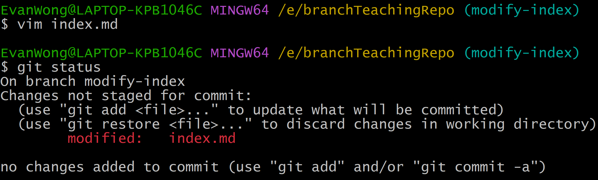随后正常add, commit即可。
Switching Between Branches
现在，让我们来看看使用不同的分支是多么快捷方便，效果又有多好。
我们当前所在的分支是 modify-index。现在我们在该分支中添加了一个subindex.md，因此让我们列出当前目录下的文件：
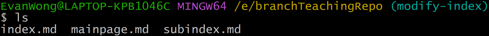我们可以看到新文件 subindex.md，如果打开 index.md 文件，可以看到内容已被修改。这很正常。
现在，让我们看看将分支更改为主分支后会发生什么情况：
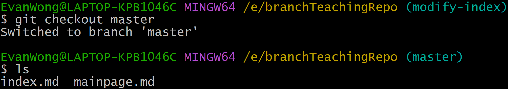subindex.md 已不复存在！如果我们打开 index.md 文件，可以看到代码恢复到修改前的状态。
现在看到使用分支是多么容易了吧？你可以在完全在不影响主分支的情况下进行更新功能测试、紧急错误调试及修复等等。
Merge Branches
假设现在我们更新并测试完毕了新功能，因此现在我们需要合并modifiy-index分支和master分支，让更新应用到主分支。
因此我们需要先切换到主分支，并且执行指令git merge：
由于 modifiy-index 分支直接来自于 master，而且在我们工作期间，master 也没有其他改动，因此 Git 将其视为 master 的延续。因此它可以 “快进”，只需将 master 和 modifiy-index 指向同一个提交即可。
由于 master 和 modifiy-index 现在本质上是一样的，我们可以删除 modifiy-index，因为它不再需要了：
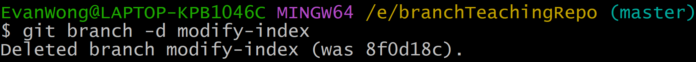Merge Confict
如果这时候我们又接到一个需求，要求修改 index.md 的某个内容，我们还是先按照之前的步骤，创建分支并修改内容：
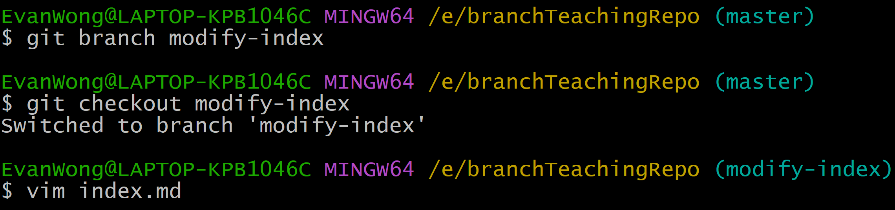然后add并commit，准备合并分支。但是如果在我们在这个分支工作的期间，主分支发生了改动，拿着时候还能直接合并吗？
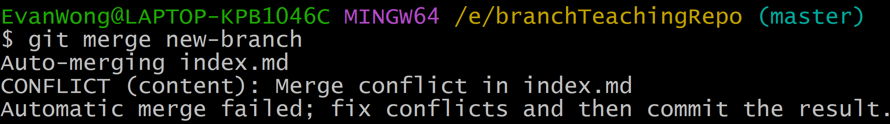（此处我合并modify-index分支早了，所以你会看到我在合并new-branch时冲突，但是意思是一样的）
此时我们发现 index.md 合并时出现冲突，我们来检查一下文件的状态：
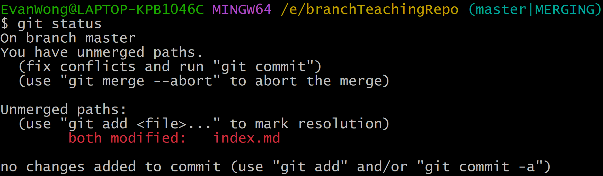可以看到both modified: index.md，这证实了此文件确实存在冲突，于是我们打开编辑器开始修改：
我们可以看到不同版本之间的差异，并按照自己的意愿进行编辑。编辑好之后正常add和commit即可，也可以顺便把不用的分支给清除了。
Developer Platform with Git
GitHub 是最大的 Git 版本库托管商，是成千上万的开发者和项目能够合作进行的中心。 大部分 Git 版本库都托管在 GitHub，很多开源项目使用 GitHub 实现 Git 托管、问题追踪、代码审查以及其它事情。 所以，尽管这不是 Git 开源项目的直接部分，但如果想要专业地使用 Git，你将不可避免地与 GitHub 打交道，所以这依然是一个绝好的学习机会。
虽然在国内由于GFW等因素，访问GitHub以及克隆、拉取、推送等操作可能存在困难，因此无法访问GitHub的同学可以使用国内的Gitee，但我们的讲解仍然以GitHub为例，不过操作大多数都是没什么区别的。
Account Setup and Configuration
这一部分相信不用多说，认准官方网站就行：
- GitHub: https://github.com/
- Gitee: https://gitee.com/
Git SSH
SSH 密钥是 SSH（安全外壳）网络协议的访问凭证。这种经过验证和加密的安全网络协议用于在不安全的开放网络上进行机器间远程通信。SSH 用于远程文件传输、网络管理和远程操作系统访问。SSH 的首字母缩写也用来描述一组与 SSH 协议交互的工具。
SSH 使用一对密钥来启动远程各方之间的安全握手。密钥对包含公钥和私钥。私钥和公钥的命名可能会引起混淆，因为它们都被称为密钥。把公开密钥看作 “锁”，把私人密钥看作 “钥匙 “会更有帮助。你把公开的 “锁 “交给远程方来加密或 “锁定 “数据。然后用你放在安全地方的 “私人 “密钥打开这些数据。
在你创建完GitHub账户后，你不需要任何配置就可以使用https协议来克隆其上的公共项目，事实上不用注册也行，但是创建账户之后你可以$fork$（稍后我们会了解什么是fork）其他项目以及推送自己的修改。但是这样的话，那么每次推送更改到GitHub时，都需要输入用户名和密码。这可能会比较麻烦。
而如果你使用了SSH 访问，由于已经有SSH key了，因此不再需要手动输入用户名和密码。
Checking for existing SSH keys
在生成SSH key之前，应该先检查本机是否已有SSH key，需要注意的是，自2022年3月15日起，ssh-dsa密钥将不再受支持，有效期在 2021 年 11 月 2 日之前的 ssh-rsa密钥可以继续使用任何签名算法。该日期之后生成的 RSA 密钥必须使用 SHA-2 签名算法。某些旧版客户端可能需要升级才能使用 SHA-2 签名。
对于Windows用户，请打开Git Bash，对于Mac/Linux直接在CLI执行以下命令即可：
|
|
检查目录列表，看你是否已经有了 SSH 公钥。默认情况下，GitHub 支持的公钥文件名如下：
- id_rsa.pub
- id_ecdsa.pub
- id_ed25519.pub
如果没有受支持的公钥和私钥对，或不想使用可用的公钥和私钥对，请生成一个新的 SSH 密钥。
如果你看到列出了现有的公钥和私钥对（例如 id_rsa.pub 和 id_rsa），而你又想用它来连接 GitHub，你可以把密钥添加到 ssh-agent 中。
Generating a new SSH key
对于Windows用户，请打开Git Bash，对于Mac/Linux直接在CLI执行以下命令即可：
|
|
如果你的系统不支持
Ed25519算法，请使用
1ssh-keygen -t rsa -b 4096 -C "your_email@example.com"
然后按几下回车即可。
Adding a new SSH key to your GitHub account
-
将文件
~/.ssh/id_ed25519.pub的内容复制到剪贴板 -
在GitHub - Settings - Access - SSH and GPG keys页面，点击
New SSH Key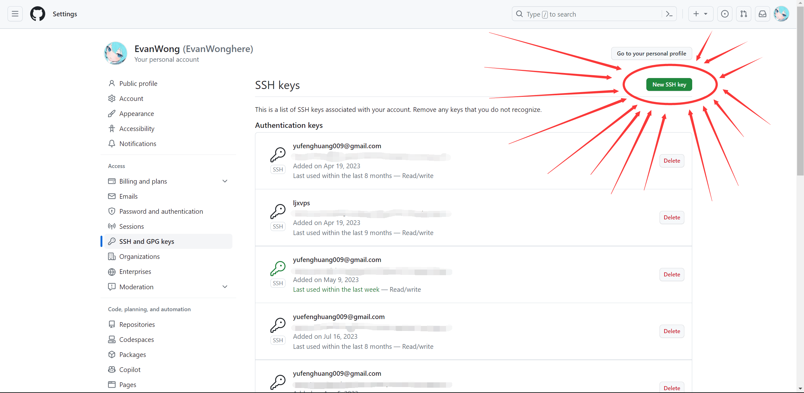 -
title就是你给这个SSH key的名字，在key处粘贴文件~/.ssh/id_ed25519.pub的内容，再点击Add SSH key即可 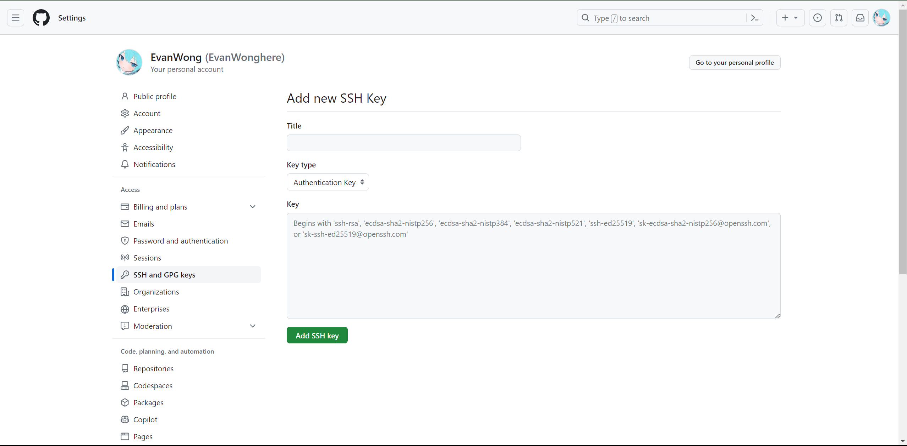 -
对于Windows用户，请打开Git Bash，对于Mac/Linux直接在CLI执行以下命令检测连接
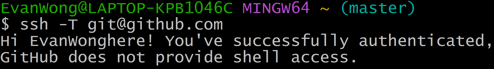1ssh -T git@github.com
Clone a repository from GitHub
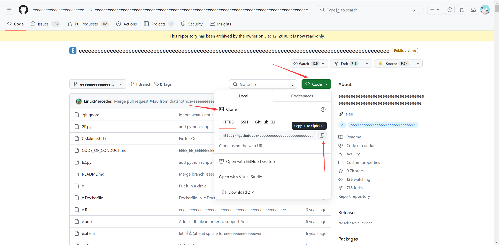官方推荐的clone方式是通过HTTPS协议，因为比较方便，可以匿名读取。而SSH方式必须配置好SSH key才行。
Contributing to a Project
Forking Projects
如果你想要参与某个项目，但是并没有推送权限，这时可以对这个项目进行fork。 当你fork一个项目时，GitHub 会在你的空间中创建一个完全属于你的项目副本，且你对其具有推送权限。
通过这种方式，项目的管理者不再需要忙着把用户添加到贡献者列表并给予他们推送权限。 人们可以fork这个项目，将修改推送到fork出的项目副本中，并通过创建拉取请求（Pull Request，简称 PR）来让他们的改动进入源版本库，下文我们会详细说明。 创建了拉取请求后，就会开启一个可供审查代码的板块，项目的拥有者和贡献者可以在此讨论相关修改，直到项目拥有者对其感到满意，并且认为这些修改可以被合并到版本库。
你可以通过点击项目页面右上角的“Fork”按钮，来fork这个项目。
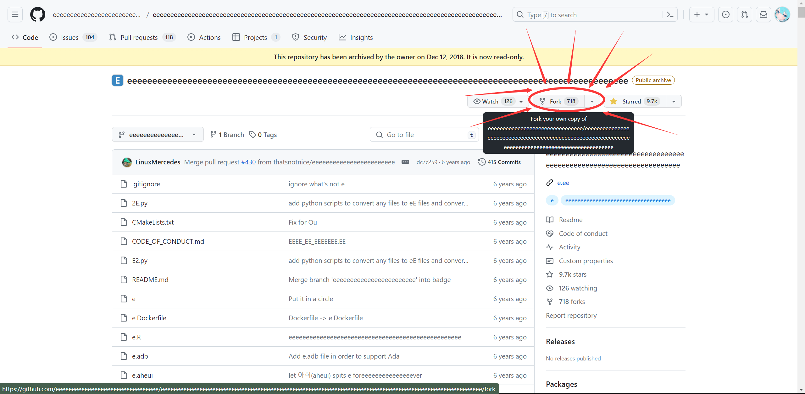稍等片刻，你将被转到新项目页面。
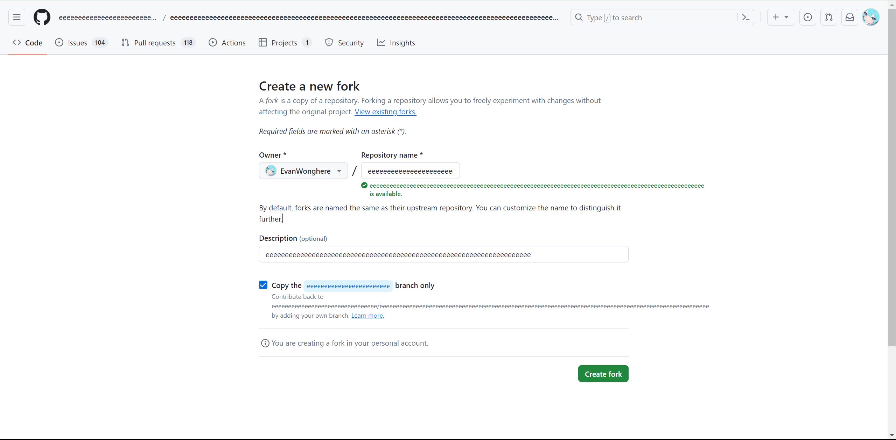The GitHub Flow
GitHub 设计了一个以拉取请求为中心的特殊合作流程。 不管你是在一个紧密的团队中使用单独的版本库，或者使用许多的“Fork”来为一个由陌生人组成的国际企业或网络做出贡献，这种合作流程都能应付。
流程通常如下：
- fork一个项目
- 从
master分支创建一个新分支 - 提交一些修改来改进项目
- 将这个分支推送到 GitHub 上
- 创建一个拉取请求
- 讨论，根据实际情况继续修改
- 项目的拥有者合并或关闭你的拉取请求
- 将更新后的
master分支同步到你的fork中
但如果只是小团队的协同开发，直接添加为Contributor即可，可不用PR。